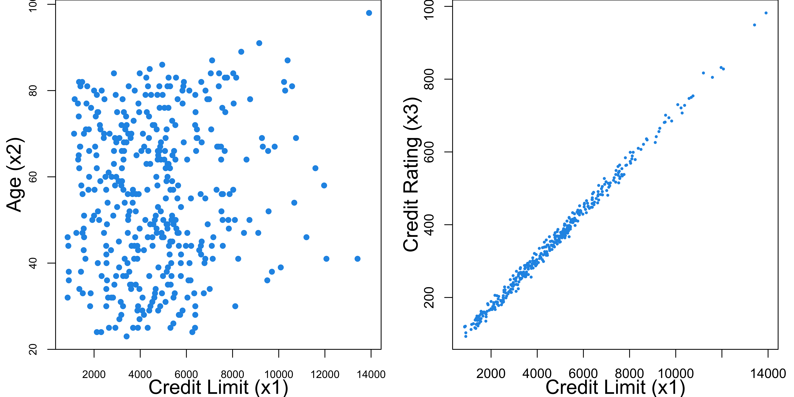
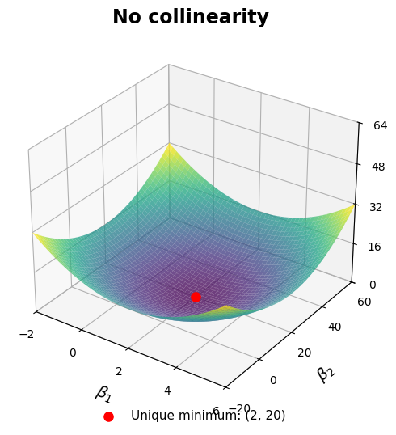
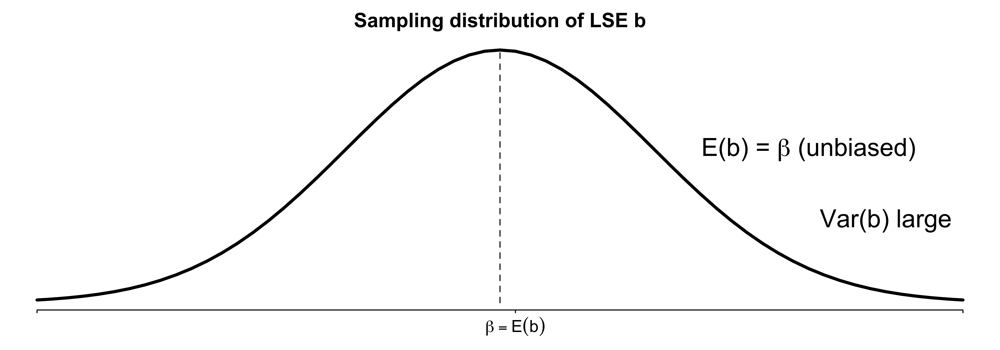

Multicollinearity
MATH 4780/MSSC 5780 Regression Analysis
Collinearity
Meaning
Sources
Effects
Diagnostics
Solutions
What is Collinearity
- Collinearity refers to the situation in which two or more predictors are closely related to one another.
-
limitandageappear to have no obvious relationship, which is good! -
limitandratingare highly correlated, and they are said to be collinear.
- Collinearity is a fundamental problem with the data rather than model specification.
- There is usually no satisfactory solution for a true collinearity problem.
- Collinearity means some regressors in your model are highly correlated.
- We want to have regressors that are NOT moving with each other.
- Ideally we desire to have orthogonal regressors.
- The intuition is, we hope predictors can explain the variation of \(y\), right? That’s why we put these predictors in the model.
- And ideally we hope each predictor can explain a part of variation of \(y\) that can only be explained by that predictor and cannot be explained by any other predictors.
- This kind of partition can be done if all the predictors are orthogonal.
- If x1 and x2 are highly correlated, meaning that they are moving together, then the two predictors are gonna explain a large part of the same variation of of \(y\).
- Think about it. If x1 and y are correlated in some way, and x1 and x2 are highly correlated, it means that x2 and y are going to be correlated in same way as x1 and y.
- So we actually use two predictors to explain the same variation of \(y\), which is redundant.
- The model will be confused and may not be able to understand this explained variation is due to x1 or due to x2.
- Later, we’ll see why we don’t want the predictors to be correlated.
- There are lots of bad effects on our regression model.
Sources of Collinearity
Four primary sources
- The data collection method employed
- Constraints on the model or in the population
- Model specification
- A model with \(p>n\)
- Let’s see what causes Collinearity. Here are 4 sources of Collinearity.
- The data collection method employed: the way we collect our data may cause the predictors to be moving together. We need to be more careful, and see if we can collect our data in another way, so that the correlation between predictors can be alleviated or weakened.
- Constraints on the model or in the population: If two predictors are correlated in nature, then it is unavoidable to have Collinearity, and if we want to keep the two predictors in our model, we should consider other methods other than OLS.
- Model specification: Polynomial regression.
- A \(p>n\) model
Data Collection
- Collinearity occurs when only a subspace of the entire sample space has been explored.
- May be able to reduce this collinearity through the sampling technique used.
- There is no physical reason why you can’t sample in that area.

Constraints
- Physical constraints are present, and the collinearity will exist regardless of collection method.

Model Specification
- Polynomial terms can cause ill-conditioning in \({\bf X'X}\).
- As the order of the model increases, \({\bf X'X}\) matrix inversion will become inaccurate, and error can be introduced into the parameter estimates.
- If range on a regressor variable is small, adding an \(x^2\) term can result in significant collinearity.
\(x\) and \(x^2\) are highly (linearly correlated) - Polynomial terms can cause ill-conditioning (a sign of Collinearity) in the \(({\bf X'X})\) matrix. - As the order of the model increases, \(({\bf X'X})\) matrix inversion will become more inaccurate, and error can be introduced into the parameter estimates - If range on a regressor variable is small, adding \(x^2\) term can result in significant Collinearity.
\(p>n\) Model
- More regressor variables than observations.
- The best way to counter this is to remove/reconstruct regressor variables.
- Principal Component Regression
- Variable Selection (Next Topic)
Consequence of Collinearity
- 👉 Large variances and covariances for the LSE \(b_j\)s.
- 👉 Tends to produce LSE \(b_j\) that are too large in absolute value. Therefore, the vector \({\bf b}\), on average, is much longer than the vector \(\boldsymbol \beta\).
- Large variances and large magnitude of coefficients lead to instable and wrong signed coefficients.
- Poor coefficients do not necessarily imply bad fit or poor prediction.
- The predictions should be confined to the \(x\) space where the collinearity holds approximately.
- The squared distance from \({\bf b}\) to \(\bsbeta\) is \(D^2 = \sum_{j=1}^k(b_j - \beta_j)^2\).
- The expected squared distance is \[E(D^2) = E\left(\sum_{j=1}^k(b_j - \beta_j)^2 \right) = \sum_{j=1}^kE\left[(b_j - \beta_j)^2\right] = \sum_{j=1}^k\mathrm{Var}(b_j) = \sigma^2 \mathrm{tr}\left[({\bf X'X})^{-1}\right]\]
- Strong Collinearity between \(x\)’s results in
- the trace of a matrix (Tr) is the sum of the diagonal elements.


| Property | Perfect Collinearity | Near Collinearity |
|---|---|---|
| \(\mathbf{X}^\top\mathbf{X}\) | Singular | Nearly singular |
| OLS solution | Infinitely many | Unique |
| Individual coefficients | Not identifiable | Difficult to estimate accurately |
| Fitted values | Unique | Unique |
| Prediction | Can still be accurate | Can still be accurate |
Collinearity Diagnostics
Ideal characteristics of a collinearity diagnostic:
- Correctly indicate if collinearity is present
- How severe the problem is
- Provide insight as to which regressors are causing the problem
Examination of the Correlation Matrix of \(x\)s
- \({\bf \Sigma} = \left[r_{st}\right]_{k\times k}\) is the correlation matrix of \(x\)s. For example, \[{\bf \Sigma} = \left[r_{st}\right]_{k\times k} = \begin{bmatrix} 1 & 0.992 \\ 0.992 & 1 \end{bmatrix}\]
- \(r_{st}\) is the pairwise correlation between \(x_s\) and \(x_t\).
- Large \(|r_{st}|\) is an indication of collinearity.
- When more than two regressors are involved in collinearity, there may be instances when collinearity is present, but the pairwise correlations are not large.
- Inspecting \(r_{st}\) is not sufficient for detecting more complex collinearity.
After unit length scaling, \({\bf X'X}\) is the correlation matrix of regressors. - If we scale and center the regressors, we have the correlation matrix. \[{\bf X'X} = \begin{bmatrix} 1 & 0.992 \\ 0.992 & 1 \end{bmatrix}\] - The off diagonal elements of the centered and scaled \({\bf X'X}\) matrix are the pairwise correlations between \(x_i\) and \(x_j\), denoted as \(r_{ij}\). For example, \(r_{12} = 0.992\). - If \(|r_{ij}| \approx 1\), there is an indication of Collinearity. But, the opposite does not always hold. - When there are more than two regressors, there may be instances when Collinearity is present, but the pairwise correlations do not indicate a problem. (Webster, Gunst, and Mason [1974] Table 9.4) - Inspection of the \(r_{ij}\) is not sufficient for detecting anything more complex than pairwise Collinearity.
Pairwise Collinearity vs. Multicollinearity
Multicollinearity occurs when a predictor can be expressed exactly or approximately as a linear combination of other predictors: \[ \mathbf{x}_j \approx \sum_{\ell\ne j}a_\ell\mathbf{x}_\ell. \]
Multicollinearity does not necessarily require a high correlation between any pair of predictors.
| Property | Pairwise Collinearity | More Complex Multicollinearity |
|---|---|---|
| Number of predictors involved | Two | Three or more |
| Linear relationship | \(x_2 \approx ax_1\) | \(x_3 \approx ax_1 + bx_2\) |
| Large pairwise correlation | Yes | Not necessarily |
| Detectable by inspecting pairwise correlations | Yes | Not always |
Can cause singularity | Yes | Yes |
Variance Inflation Factors
The diagonals of \({\bf \Sigma}^{-1} = {\bf C}\) in correlation form are called variance inflation factors \[\text{VIF}_j = {\bf C}_{jj}\]
Example: \[{\bf \Sigma} = \begin{bmatrix} 1 & 0.992 \\ 0.992 & 1 \end{bmatrix}; \quad {\bf \Sigma}^{-1} = \begin{bmatrix} 62.8 & -62.2 \\ -62.2 & 62.8 \end{bmatrix}\] and \(\text{VIF}_1 = 62.8\).
- The collinearity produces an inflation in the variances of the estimated coefficients, an increase in 60-fold over the ideal case when the two regressors are orthogonal.
- VIFs \(> 10\) are considered significant.
Variance Inflation Factors
\[\text{VIF}_j = \frac{1}{1 - R^2_{X_j | X_{-j}}}\] where \(R^2_{X_j | X_{-j}}\) is the coefficient of determination obtained when \(x_j\) is regressed on the other regressors \(x_i\)s, \(i \ne j\).
\[\mathrm{Var}(b_j) = \frac{s^2}{\sum_{i=1}^n(x_{ij} - \bar{x}_j)^2} \times \text{VIF}_j\]
\(\text{VIF}_j\) measures the combined effect of the dependencies among the regressors on the variance of \(b_j\).
If \(x_j\) is near linearly dependent on some subset of the remaining regressors, \({\bf C}_{jj}\) is large.
Remember what does linear (in)dependence mean?
\[\text{VIF}_j = {\bf C}_{jj} = \frac{1}{1 - R^2_j}\] + \(R_j^2\): the coefficient of determination obtained when \(x_j\) is regressed on the remaining regressors \(x_i, i \ne j\). - If \(x_j\) can be explained a lot from other regressors, \(x_j\) is probably unnecessary in the regression model when all others are in the model. When it is in the model, the model cannot understand what the real effect the predictor can provide, and therefore its coefficient has a large variance. - The regressors that have high VIFs probably have poorly estimated coefficients. - The Collinearity produces an inflation in the variances of the estimated coefficients, an increase in 60-fold over the ideal case when the two regressors are orthogonal. - Since the variance of the j th regression coefficients is C jj σ 2 , we can view C jj as the factor by which the variance of ˆβj is increased due to near - linear dependences among the regressors.
Hospital Manpower Data
manpower y x1 x2 x3 x4 x5
1 567 16 2463 473 18.0 4.5
2 697 44 2048 1340 9.5 6.9
3 1033 20 3940 620 12.8 4.3
4 1604 19 6505 568 36.7 3.9
5 1611 49 5723 1498 35.7 5.5
6 1613 45 11520 1366 24.0 4.6
7 1854 55 5779 1687 43.3 5.6
8 2161 59 5969 1640 46.7 5.2
9 2306 94 8461 2872 78.7 6.2
10 3504 128 20106 3655 180.5 6.2
11 3572 96 13313 2912 60.9 5.9
12 3741 131 10771 3921 103.7 4.9
13 4027 127 15543 3866 126.8 5.5
14 10344 253 36194 7684 157.7 7.0
15 11732 409 34703 12446 169.4 10.8
16 15415 464 39204 14098 331.4 7.0
17 18854 510 86533 15524 371.6 6.3\(y\): Monthly man-hours
\(x_1\): Average daily patient load
\(x_2\): Monthly X-ray exposures
\(x_3\): Monthly occupied bed days
\(x_4\): Eligible population in the area / 1000
\(x_5\): Average length of patients’ stay in days
Do you expect to see positive or negative relationship between \(y\) and each \(x_i\)?
Hospital Manpower - Pairwise Dependence

Hospital Manpower - Model Fit
...
Estimate Std. Error t value Pr(>|t|)
(Intercept) 1962.9482 1071.3617 1.83 0.094 .
x1 -15.8517 97.6530 -0.16 0.874
x2 0.0559 0.0213 2.63 0.023 *
x3 1.5896 3.0921 0.51 0.617
x4 -4.2187 7.1766 -0.59 0.569
x5 -394.3141 209.6395 -1.88 0.087 .
Residual standard error: 642 on 11 degrees of freedom
Multiple R-squared: 0.991, Adjusted R-squared: 0.987
...Excellent fit. But any issues of the this fitted result?
. . .
- The coefficients \(b_1\), \(b_4\) and \(b_5\) are negative.
- In the case of \(x_1\), an increase in patient load, when other \(x\)’s are held constant, corresponds to a decrease in hospital manpower. (wrong sign due to large variance)
- Even though the regression model fits the data quite well, the rather curious signs on the regression coefficients may be the result of the effect of Collinearity.
Hospital Manpower - VIF
X <- manpower[, -1]
(Sig <- cor(X)) x1 x2 x3 x4 x5
x1 1.00 0.91 1.00 0.94 0.67
x2 0.91 1.00 0.91 0.91 0.45
x3 1.00 0.91 1.00 0.93 0.67
x4 0.94 0.91 0.93 1.00 0.46
x5 0.67 0.45 0.67 0.46 1.00. . .
## put the fitted model in vif()
(vif_all <- car::vif(lm_full)) x1 x2 x3 x4 x5
9597.6 7.9 8933.1 23.3 4.3 \(x_1\) Average daily patient load and \(x_3\) Monthly occupied bed days are highly correlated.
Hospital Manpower - Confidence Interval

- Marginally, \(b_1\) and \(b_3\) vary a lot. The CI for \(\beta_1\) and CI for \(\beta_3\) both contain zero.
2.5 % 97.5 %
x1 -230.8 199.1
x3 -5.2 8.4
- But very confident that \(\beta_1\) and \(\beta_3\) cannot be both zero.
- The model is quite not sure how much \(x_1\) and \(x_3\) affect \(y\).
Hospital Manpower - Confidence Interval


- \(x_4\) and \(x_5\) are not highly correlated pairwisely. \(r_{45} = 0.46\).
- However, their CI is still inflated due to the collinearity effect of other variables.
2.5 % 97.5 %
x4 -20 12
x5 -856 67Don’t just look at the pairwise correlation
Eigensystem Analysis: Condition Indices
- The eigenvalues of \({\bf \Sigma}\) (the correlation matrix of \(\bf X\)), \(\lambda_1, \lambda_2, \dots, \lambda_k\), can measure collinearity.
- If there are one or more near-linear dependencies, one or more of the \(\lambda_i\)s will be (relatively) small.
- Condition indices of \({\bf \Sigma}\) are \(\kappa_j = \frac{\lambda_{max}}{\lambda_{j}}\).
- The number of \(\kappa_j > 1000\) is a measure of the number of near-linear dependencies in \({\bf \Sigma}.\)
- The eigenvalues of \({\bf X'X}\), \(\lambda_1, \lambda_2, \dots, \lambda_k\), can measure Collinearity.
- If there are one or more near-linear dependencies in the data, one or more of the \(\lambda_i\)s will be small.
- Condition number of \({\bf X'X}\) is \(\kappa = \frac{\lambda_{max}}{\lambda_{min}}\).
- \(\kappa > 100\) implies Collinearity.
- \(\kappa\) does not tell us how many regressors are involved.
- Condition indices of \({\bf X'X}\) is \(\kappa_j = \frac{\lambda_{max}}{\lambda_{j}}\).
- The number of \(\kappa_j > 1000\) is a measure of the number of near-linear dependencies in \({\bf X'X}.\)
Hospital Manpower - Eigensystem Analysis
eigen_Sig <- eigen(Sig)
## eigenvalues
(lambda <- eigen_Sig$values)[1] 4.2e+00 6.7e-01 9.5e-02 4.1e-02 5.4e-05## Conditional indices
max(lambda) / lambda[1] 1.0 6.3 44.4 103.1 77769.7- \(\lambda_5 \approx 0\) and \(\kappa_5 \approx 77770\), indicating collinearity.
Eigenvalues are listed in a decreasing order, \(\lambda_1 > \lambda_2 > \cdots > \lambda_k\), and \(\lambda_5\) is not the eigenvalue of \(x_5\).
[,1] [,2] [,3] [,4] [,5]
[1,] -0.49 -0.00203 0.17 -0.47 0.7195
[2,] -0.45 -0.33561 -0.80 0.19 0.0012
[3,] -0.48 -0.00085 0.15 -0.51 -0.6941
[4,] -0.46 -0.31080 0.54 0.63 -0.0234
[5,] -0.33 0.88925 -0.12 0.29 -0.0068[1] 1 1 1 1 1There is one near linear dependency.
Eigensystem Analysis: Eigendecomposition
- Eigendecomposition \[{\bf \Sigma = V\boldsymbol \Lambda V'}\]
- \(\boldsymbol \Lambda\) is a \(k \times k\) diagonal matrix whose elements are \(\lambda_j\).
- \({\bf V} = [{\bf v}_1 \quad {\bf v}_2 \quad \dots \quad {\bf v}_k]\) is a \(k \times k\) orthogonal matrix whose columns are the eigenvectors of \({\bf \Sigma}\).
- If \(\lambda_j \approx 0\), the associated \({\bf v}_j = (v_{1j}, v_{2j}, \dots, v_{kj})'\) describes how (and what) regressors are linearly dependent: \[\sum_{i=1}^kv_{ij}{\bf x}_i \cong \mathbf{0}\]
- If \(\lambda_j \approx 0\), the associated \({\bf v}_j = (v_{1j}, v_{2j}, \dots, v_{kj})'\) describes the nature of this linear dependence.
- \(\sum_{i=1}^kc_i{\bf x}_i \cong \mathbf{0}\): The “weights” \(c_i\) are the individual elements in the \({\bf v}_j\).
Hospital Manpower - Eigensystem Analysis
## eigenvector matrix
(V <- eigen_Sig$vectors) [,1] [,2] [,3] [,4] [,5]
[1,] -0.49 -0.00203 0.17 -0.47 0.7195
[2,] -0.45 -0.33561 -0.80 0.19 0.0012
[3,] -0.48 -0.00085 0.15 -0.51 -0.6941
[4,] -0.46 -0.31080 0.54 0.63 -0.0234
[5,] -0.33 0.88925 -0.12 0.29 -0.0068- \({\bf X}{\bf v}_5 = \sum_{i=1}^5v_{i5}{\bf x}_i \approx {\bf 0}\).
- \(0.720 {\bf x}_1 + 0.001 {\bf x}_2 - 0.694 {\bf x}_3 - 0.023 {\bf x}_4 - 0.007 {\bf x}_5 \approx {\bf 0}\)
- Highly correlated \(x_1\) and \(x_3\) causes collinearity.
- All \({\bf x}\)s here are unit length scaled.
X_s <- apply(X, 2, unit_len_scale)X_s %*% V[, 5] [,1]
[1,] -0.00037
[2,] -0.00144
[3,] 0.00032
[4,] -0.00058
[5,] -0.00108
[6,] 0.00047
[7,] -0.00131
[8,] 0.00492
[9,] -0.00225
[10,] 0.00230
[11,] -0.00050
[12,] 0.00209
[13,] -0.00251
[14,] -0.00016
[15,] 0.00131
[16,] -0.00098
[17,] -0.00023 [,1] [,2] [,3] [,4] [,5]
[1,] 4.2 0.00 0.000 0.000 0.0e+00
[2,] 0.0 0.67 0.000 0.000 0.0e+00
[3,] 0.0 0.00 0.095 0.000 0.0e+00
[4,] 0.0 0.00 0.000 0.041 0.0e+00
[5,] 0.0 0.00 0.000 0.000 5.4e-05 [,1] [,2] [,3] [,4] [,5]
[1,] 1 0 0 0 0
[2,] 0 1 0 0 0
[3,] 0 0 1 0 0
[4,] 0 0 0 1 0
[5,] 0 0 0 0 1 [,1] [,2] [,3] [,4] [,5]
[1,] 1.00 0.91 1.00 0.94 0.67
[2,] 0.91 1.00 0.91 0.91 0.45
[3,] 1.00 0.91 1.00 0.93 0.67
[4,] 0.94 0.91 0.93 1.00 0.46
[5,] 0.67 0.45 0.67 0.46 1.00## near-zero vector
X_s%*%V[, 5] [,1]
[1,] -0.00037
[2,] -0.00144
[3,] 0.00032
[4,] -0.00058
[5,] -0.00108
[6,] 0.00047
[7,] -0.00131
[8,] 0.00492
[9,] -0.00225
[10,] 0.00230
[11,] -0.00050
[12,] 0.00209
[13,] -0.00251
[14,] -0.00016
[15,] 0.00131
[16,] -0.00098
[17,] -0.00023Eigensystem Analysis: Variance Proportion
- \(\text{VIF}_j = \sum_{i=1}^k\frac{v_{ji}^2}{\lambda_i}\)
- \(\pi_{ij} = \frac{v_{ji}^2/\lambda_i}{\text{VIF}_j}\) is the variance decomposition proportion that measures the proportion of the variance of \(b_j\) contributed by \(\lambda_i\).
- \(\pi_{ij} > 0.5\) indicates collinearity.
- A small \(\lambda_i\), accompanied by a subset of regressors with high variance proportions \(\pi_{ij}\) represents a dependency involving the regressors in that subset.
- If \(\pi_{32}\) and \(\pi_{34}\) are large, \(\lambda_3\) is associated with a collinearity that inflats the variance of \(b_2\) and \(b_4\).
- \({\bf X'X = V\bsLambda V'}\), therefore \({\bf (X'X)^{-1} = V\bsLambda^{-1} V'}\)
- \(\mathrm{Var}\left( {\bf b} \right) = \sigma^2 {\bf (X'X)} ^{-1} = \sigma^2 {\bf V\bsLambda^{-1} V'}\)
- \(\mathrm{Var}\left( b_j \right) = \sigma^2 \sum_{i=1}^k\frac{v_{ji}^2}{\lambda_i} =\sigma^2\text{VIF}_j\)
- \(\sum_{j=1}^k \mathrm{Var}\left( b_j \right) =\sigma^2 \sum_{i=1}^k\sum_{j=1}^k\frac{v_{ji}^2}{\lambda_i} = \sigma^2\sum_{i=1}^k\frac{1}{\lambda_i}\) (length of \({\bf v}_j\) is 1)
- \(\pi_{ij} = \frac{v_{ji}^2/\lambda_i}{\text{VIF}_j}\) is the variance decomposition proportion, which is attributed to (or blamed on) the colliearity characterized by the eigenvalue \(\lambda_i\).
- \(\pi_{ij} > 0.5\) indicates Collinearity.
A small \(\lambda_i\), accompanied by a subset of regressors with high variance proportions \(\pi_{ij}\): + represents a dependency involving the regressors in that subset, and the dependency is damaging to the precision of estimation of the coefficients in the subset.
Hospital Manpower - Variance Proportion
[,1] [,2] [,3] [,4] [,5]
[1,] 0.00001 0.0062 0.00001 0.0022 0.0062
[2,] 0.00000 0.0213 0.00000 0.0062 0.2768
[3,] 0.00003 0.8607 0.00003 0.1309 0.0328
[4,] 0.00056 0.1087 0.00071 0.4237 0.4851
[5,] 0.99940 0.0031 0.99925 0.4370 0.1991- \(\pi_{51}\) and \(\pi_{53}\) are large, indicating that \(\lambda_5\) is inflating the variance of \(b_1\) and \(b_3\).
Other Diagnostics
Collinearity may exist if
overall \(F\)-test for regression is significant, but individual \(t\)-tests are all non-significant.
-
the coefficient estimates are instable
- adding or removing a regressor produces large changes in the estimates
- deleting one or more observations results in large changes in the estimates
- if the signs or magnitudes of the estimates are contrary to prior expectation
Hospital Manpower - Significance
summ_full$coefficients ## t-test not significant Estimate Std. Error t value Pr(>|t|)
(Intercept) 1962.948 1.1e+03 1.83 0.094
x1 -15.852 9.8e+01 -0.16 0.874
x2 0.056 2.1e-02 2.63 0.023
x3 1.590 3.1e+00 0.51 0.617
x4 -4.219 7.2e+00 -0.59 0.569
x5 -394.314 2.1e+02 -1.88 0.087summ_full$fstatistic ## F-test significantvalue numdf dendf
238 5 11 . . .
Diagonastics Summary
Summary:
- Eigenvalue (or ratios): assess the seriousness of a particular dependency
- Variance proportion: signify what regressors are involved and to what extent
- VIF: determine the damage to the individual coefficient
Methods for Dealing with Collinearity
Data collection: Collect more data to break up the collinearity in the existing data
. . .
Model specification/An overdefined model: Respecify the model
-
redefining the regressors : Use \(x = x_1+x_2\) or \(x = x_1x_2\).
- Avoid combining regressors in different units.
-
eliminating regressors : remove \(x_1\) or \(x_2\).
- May damage the predictive power if the removed regressors have significant explanatory power. (Variable selection)
- If we remove \(x_2\), we estimate the marginal relationship between \(y\) and \(x_1\), ignoring \(x_2\), rather than the partial relationship conditioning on \(x_2\).
. . .
Constraint on the model or in the population: Say goodbye to least-squares estimation.
- Ridge Regression, Principal Component Regression, Bayesian Regression, etc
Unbiased vs. Biased Estimators
- The LSE \({\bf b}\) is unbiased, i.e., \(E({\bf b}) = \boldsymbol \beta\).
- LSE is a BLUE: has minimum variance among all unbiased linear estimators
- No guarantee that this variance will be small.
- When collinearity exists, \(\mathrm{Var}({\bf b})\) is largely inflated.

implying that confidence intervals on β would be wide and the point estimate ˆb is very unstable.
Biased Estimators
A good estimator is the one that balances bias and variance well, or the one that minimizes the mean square error \[\small \text{MSE}(\hat{\beta}) = E[(\hat{\beta} - \beta)^2] = \mathrm{Var}(\hat{\beta}) + \text{bias}(\hat{\beta})^2\]
- Biasedness and variance have a trade-off relationship!
- Find a biased estimator \({\bf \hat{b}}\) that has smaller variance and MSE than \({\bf b}\).

Ridge Regression: Motivation
- \({\bf \Sigma} = \begin{bmatrix} 1 & 0.992 \\ 0.992 & 1 \end{bmatrix}\) \(\quad {\bf \Sigma}^{-1} = \begin{bmatrix} 62.8 & -62.2 \\ -62.2 & 62.8 \end{bmatrix}\)
- \(\lambda_1 = 1.992\) and \(\lambda_2 = 0.008\)
. . .
- \({\bf \Sigma} = \begin{bmatrix} 1 & 0\\ 0 & 1 \end{bmatrix}\) \(\quad {\bf \Sigma}^{-1} = \begin{bmatrix} 1 & 0 \\ 0 & 1 \end{bmatrix}\)
- \(\lambda_1 = 1\) and \(\lambda_2 = 1\)
. . .
- IDEA: To make \({\bf \Sigma}\) behave more like the orthogonal case. But how?
. . .
- Use \(({\bf X'X + \delta I})\) with a small \(\delta >0\).
- The eigenvalues of \(({\bf X'X + \delta I})\) are \(\lambda_1+\delta\) and \(\lambda_2 + \delta\).
- If \(\delta = 0.1\), \(({\bf X'X + \delta I}) = \begin{bmatrix} 1.1 & 0.992 \\ 0.992 & 1.1 \end{bmatrix}\) and \(({\bf X'X + \delta I})^{-1} = \begin{bmatrix} 4.87 & -4.39 \\ -4.39 & 4.87 \end{bmatrix}\)
- The diagonals do not dominate as in the orthogonal case whose matrix diagonals dominate and \(\lambda_1 = \lambda_2 = 1\). Adding \(\delta\) to the main diagonal effectively replaces \(\lambda\) by \(\lambda+\delta\).
Ridge Regression Estimator
With a small \(\delta >0\), the ridge estimator \({\bf b}_R\) is \[{\bf b}_R = ({\bf X'X + \delta I})^{-1}{\bf X'y}\]
\({\bf b}_R\) is a biased estimator for \(\boldsymbol \beta\).
- \(\sum_{i=1}^k \mathrm{Var}\left( b_{Ri} \right) \le \sum_{i=1}^k \mathrm{Var}\left( b_i \right)\) with equality when \(\delta = 0\).
. . .
- As \(\delta\) increases,
- \(\sum_{i=1}^k \mathrm{Var}\left( b_{Ri} \right)\) decreases
- Bias \(E\left[ {\bf b}_R \right] - \boldsymbol \beta\) increases
- \(R^2\) decreases (it’s OK as we care more about stable estimates and better prediction)
. . .
- Choose \(\delta\) by the ridge trace that is a plot of \(\{ b_{Ri} \}_{i=1}^k\) vs. \(\delta\).
- Select a small value of \(\delta\) at which the ridge estimates \({\bf b}_R\) are stable.
- Cross Validation
- The ridge estimator \({\bf b}_R\) is \[{\bf b}_R = ({\bf X'X + \delta I})^{-1}{\bf X'y}\]
- \({\bf b}_R\) is a biased estimator of \(\bsbeta\): \[E\left[ {\bf b}_R \right] = E\left[({\bf X'X + \delta I})^{-1}{\bf X'y} \right] = E\left[({\bf X'X + \delta I})^{-1}({\bf X'X}){\bf b}\right] = {\bf Z_{\delta}}\bsbeta\]
- The covariance matrix of \({\bf b}_R\) is \[\mathrm{Var}\left({\bf b}_R \right) = \sigma^2 ({\bf X'X + \delta I})^{-1}{\bf X'X }({\bf X'X + \delta I})^{-1}\]
- For LSE, \(\sum_{i=1}^k \mathrm{Var}\left( b_i \right) = \sigma^2\sum_{i=1}^k\frac{1}{\lambda_i}\)
- For ridge estimator, \(\sum_{i=1}^k \mathrm{Var}\left( b_{Ri} \right) = \sigma^2\sum_{i=1}^k\frac{\lambda_i}{(\lambda_i+\delta)^2}\)
- \(\sum_{i=1}^k \mathrm{Var}\left( b_{Ri} \right) \le \sum_{i=1}^k \mathrm{Var}\left( b_i \right)\) with equality when \(\delta = 0\).
- As \(\delta\) increases, \(\sum_{i=1}^k \mathrm{Var}\left( b_{Ri} \right)\) decreases.
Hospital Manpower - Ridge Regression
manpower_scale <- apply(manpower, 2, scale)
df <- as.data.frame(manpower_scale)
delta <- seq(0, 0.5, by = 0.01)
ridge_fit <- MASS::lm.ridge(
y ~ . -1, data = df, lambda = delta)
matplot(coef(ridge_fit), type = "l",
xlab = "delta", ylab = "Coef",
main = "Ridge Trace")
abline(v = which(delta == 0.07),
col = "orange", lty = 2)
Hospital Manpower - Ridge Regression